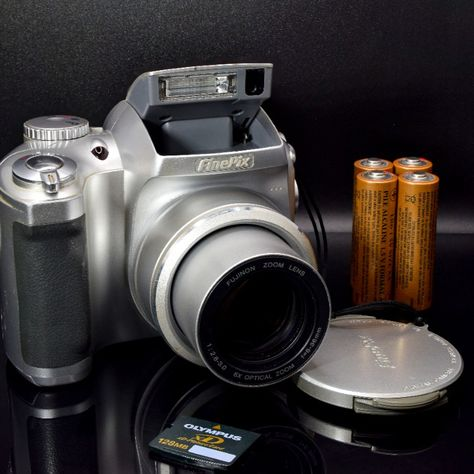

Bridge Cameras
Bridge cameras bridge the gap between compact cameras and DSLRs, offering a versatile option with features from both categories. They typically have fixed zoom lenses with extensive zoom ranges, making them suitable for a wide variety of photography styles.
Features of Bridge Cameras
Some key features of bridge cameras include:
- Extensive zoom ranges
- Fixed, non-interchangeable lenses
- Manual controls similar to DSLRs
- Electronic viewfinders (EVF)
- Moderate sensor sizes
Popular Bridge Brands and Models
Some popular brands and models in the bridge camera market include:
- Canon PowerShot series (e.g., Canon PowerShot SX70 HS, Canon PowerShot G3 X)
- Sony Cyber-shot series (e.g., Sony Cyber-shot RX10 IV, Sony Cyber-shot HX400V)
- Nikon Coolpix series (e.g., Nikon Coolpix P1000, Nikon Coolpix B600)
Bridge cameras are great for photographers looking for a versatile and powerful all-in-one solution.